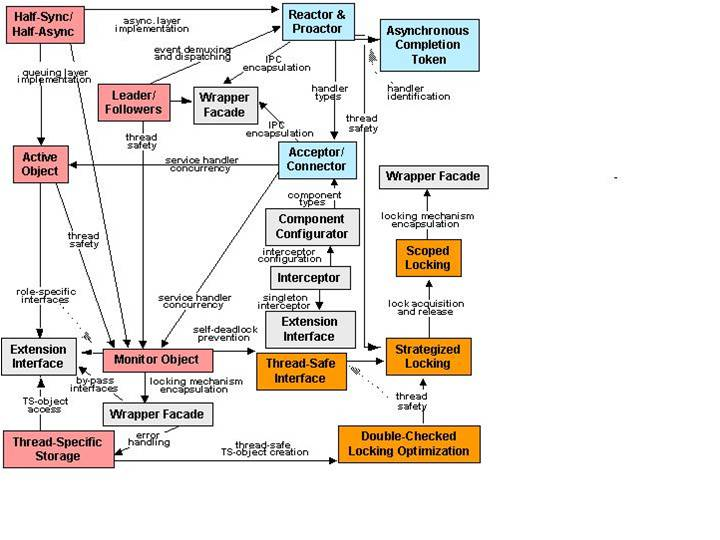
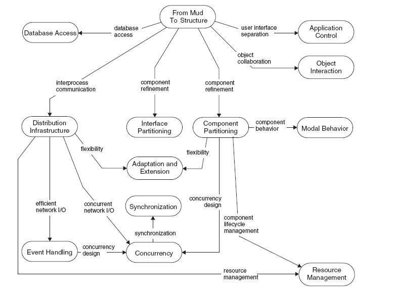
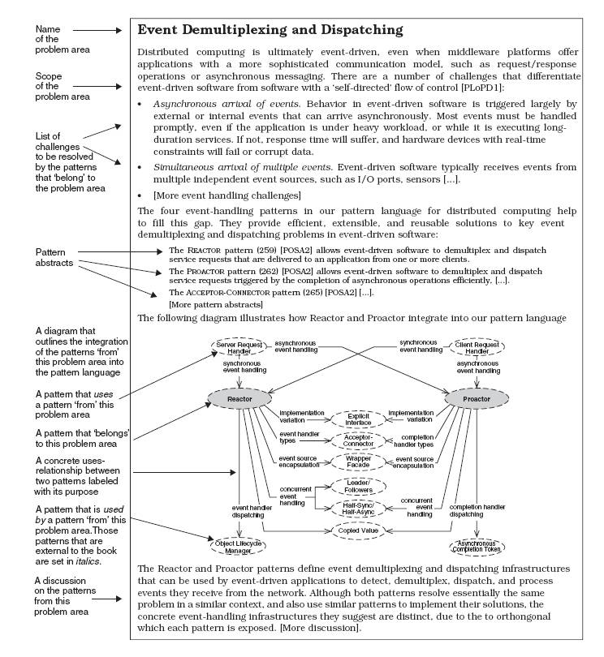

Per vari autori, una collezione di pattern che si appoggiano l'uno sull'altro
permette di costruire sistemi che risultano superiori alla somma delle loro parti.
Ad esempio Michael Beedle, in
Reengineering the Application Development Process lega l'uso di
insiemi di pattern
all'idea di sistemi capaci di mostrare comportamenti emergenti ed auto-organizzanti:
"spontaneously recurring patterns of dense local interaction between entities,
resulting in dynamic, self-organizing systems that are adaptive, open, and capable
of multi-scale effects. In other words, pattern languages provide a dynamic process
for the orderly resolution of problems within their domain which indirectly leads
to the resolution of a much broader problem. The patterns and rules in a pattern
language combine to form an architectural style. In this manner, pattern languages
guide system analysts, architects, designers, and implementors to produce workable
systems that solve common organizational and development problems at all levels
of scale and diversity."
In generale va detto che non si tratta solo di
definire collezioni o cataloghi di pattern secondo un qualche
schema logico di aggregazione; l'obiettivo è individuare famiglie e/o insiemi di pattern che
nel loro complesso possano caratterizzare uno stile architetturale.
La figura che segue mostra le relazioni tra i pattern presentati in [POSA2]
Figure 1. Il sitema di pattern POSA2

L'organizzazione di pattern in insiemi coerenti può avvenire in vari modi.
In particolare ([POSA5] cap 9, pag. 248-250):
- Si definisce un catalogo di pattern secondo un qualche criterio;
in questo modo si evidenziano insiemi detti pattern collections ([POSA5] cap 8, pag. 209-242).
I Design Patterns descritti nel testo della GoF [GFJV95]
sono suddivisi in tre categorie:
pattern creazionali, strutturali e comportamentali.
- Un insieme di pattern può essere esplorato cercando
famiglie di pattern che possano risolvere specifici problemi; in questo modo si
evidenziano insiemi detti pattern complements ([POSA5] cap 5, pag. 135-164).
- Individuare i pattern per il progetto e la realizzazione dei quali può
essere utile fare ricorso ad altri pattern; in questo modo si
evidenziano insiemi detti pattern compounds ([POSA5] cap 6, pag. 165-182).
- Trattare lo sviluppo di un sistema software
in modo narrativo, evidenziando la sequanza logica di applicazione di pattern,
e descrivendo i criteri con cui
i pattern sono stati progressivamente selezionati, guidando di fatto il progetto e lo sviluppo
del sistema; in questo modo si
evidenziano insiemi detti pattern stories ([POSA5] cap 7, pag. 183-190);
- Rimuovere la parte narrativa specifica da una pattern story, ponenndo
in evidenza un insieme "riusabile" detto pattern sequence
([POSA5] cap 7, pag. 191-208).
Un insieme di pattern forma un sistema quando è completo da due punti di vista:
- Morfologicamente: i pattern si collegano l'uno all'altro a formare una struttura
priva di discontiniità.
- Funzionalmente: ogni nuova forza (introdotta da un pattern)
è risolta dal sistema di pattern.
Nel seguito faremo riferimento in particolare al sistema di pattern definito in [POSA4]
che amplia quanto definito in [POSA2] includendo 114 pattern
suddivisi in 13 aree di problemi:
- from mud to structure
- distribution infrastructure
- event demultiplexing and dispatching
- interface partitioning
- component partitioning
- application control
- concurrency
- synchronization
- object interaction
- adaptation and extension
- modal behaviour
- resource management
- database access
A pag. 40 di [POSA4] viene presentato un diagramma che illustra le relazioni logiche tra le aree:
Figure 2. Aree POSA4

A pag.45 gli autori presentano una figura che illustra in modo sintetico
il modo con cui viene descritta una problem area:
Figure 3. Struttura della sescrizione di un'area POSA4

Notiamo che gli autori non utlizzano, intenzionalmente, alcuna notazione
di quelle oggi in uso (in particolare quella connessa a
UML) ,
dicendo che (pag. 47):
"One reason we do not use popular modeling notations is to avoid the
fallacy of 'false concreteness,' which often leads readers to think that
what is in the diagram is the only way to implement a pattern. Instead,
we provide a solution sketch, not a concrete specification with classes,
objects, and relationships between them. Our notation therefore
mixes many aspects: role specification, role organization, role collaboration,
pseudo-interfaces, and pseudo-code, whatever appears
appropriate to show a particular pattern."